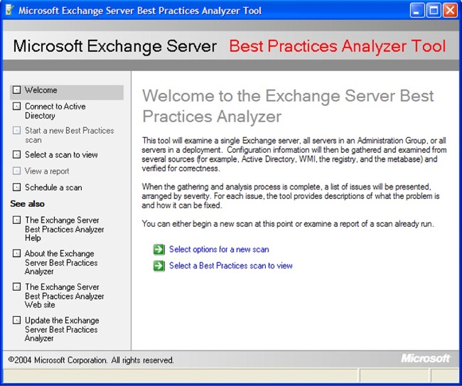

| Best Practices Analyzer Core Library |
| The Customizable GUI |
The Provided GUI
As part of the BPA library, a complete GUI is provided that just
needs to have a few customizations specified in order to be tailored for
a particular application. This should save a considerable amount
of work and also ensures that different Best Practice Analyzers have the
same look and feel to them. In some cases, however, such as if a
product wants to integrate the functionality into its admin console or
they want the application to have a similar look and feel to the core
product, then this code need not be used and the application can be
plugged in below in. This, of course, would require more work for
the product team.
This section shows what the standard GUI looks like and where it can
be customized.
The GUI Framework
The GUI is divided into four major sections: the top panel, the
bottom panel, the left panel and the main panel. Here is a screen
shot of ExBPA which shows this organization:

The title bar, main title and any other references to the
application name can be customized by the application. Some of the
left panel navigation links can be disabled and new ones added.
The main panel contains the screen controls, and this will change as you
navigate from one screen to the next. A standard set of screens is
supplied with the GUI:
- Download Updates.
This
consists of several screens that will check to see if a newer
version of the configuration or binary is found, and give the user
the choice of whether to download them or not. These
screens can be completely disabled if the application does not want
to support auto-update.
- Welcome. This screen is shown above. The
application can specify what introductory text they want displayed.
- Scan In Progress. This will show a scan while it is
running, and provide status information so the user can see how far
it is. Note that to actually start a scan going requires
custom screens to be created that retrieve application specific run
time information from the user. More on this below.
- View Reports. This provides the user with a number
of reporting options for the scan selected (this may be the one just
created, or one that was created previously). A number of
standard reports are supplied, and an application can enable or
disable which ones they wish, as well as define entirely new
reports.
- Select Scan. This shows a list of scans that have
been created so far and allows a user to pick one to view or delete.
- Schedule Scan. This allows a scan to be scheduled
to run at intervals. Note: a console version must also exist
in order to enable this to work. This screen may be disabled
if the application doesn't want to support it.
Examples
Example 1: Creating a Server
Selection Screen